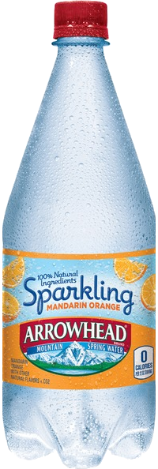

In a world crying out for a top 10 show.. John Rocha and Matt Knost are here to bring you the Top 10.. Brought to you by the SchmoesKnow. Take it away boyz..
December 12, 2017
Ken Napzok joins to talk about 7-Eleven and some space pictures.
My personal 3 undisputable Star Wars facts:
-Mace Windu is not a secondary character but the most badass Jedi ever. Proof:
-Star Wars 2003 cartoon is the best Star Wars related thing of all the cartoons and movies combined.
-TFA Death Star 3.0 reveal in cinema: "Guys, are we really doing this, again?" 1/10
December 5, 2017
Rocha, You fuck my wife??
November 28, 2017
Midnight squad in the house. Guys, what are we doing with Cars 2?
November 21, 2017
Rachel Cushing joins improving the show's class levels.
November 14, 2017
Lovely Jason Inman joins in. He is literally Batman.
November 7, 2017
Matt Knost kinda tired from basketball and Rocha went to a sausage fest.
October 31, 2017
Marc Andreyko joins with some curveballs and contentious debates ensue. PS: Blade should make the list.
October 24, 2017
Where the f* is Godzilla?
October 17, 2017
The Benny Hill Show brought to you by Lucky Strike.
October 10, 2017
Steven Seagal was also in Air Force One. Except it was called Executive Decision. John Rocha puts The Rock on cardinal sin of omissions.
October 3, 2017
Cody and Adam crash the show and an epic battle ensues.
September 26, 2017
Red line Rocha is back.
September 19, 2017
There is ZERO chance Fury Road is better than Road Warrior. ZERO.
September 12, 2017
Sicario is overrated.
September 7, 2017
The great Knostius
August 29, 2017
"I am not getting as much bang on this wood as I used to." - John on his more intimate moments.
August 22, 2017
I for one welcome our new terminator overlords.
August 15, 2017
Yeah exactly. You hold in your hands a hard drive that has thousands of movies on it.
August 8, 2017
Gabe Knost is the guest this week, taking way too much shit from the duo. -"I will continue to promote this show.. for free."
August 1, 2017
I was convinced they would only have movies with the word "city" in the title, like Sin City. Podcast ends due to technical difficulties at number 4. Rocha's life status is threatened.
July 25, 2017
Excel spreadsheet every couple of months? Good luck with that. SPYCRAFT.
July 18, 2017
You got what you wanted you sick fucks. STILL WORKING.
October 19, 2016
October 12, 2016
October 5, 2016
September 28, 2016
September 21, 2016
The legendary Hal Rudnick joins.
September 14, 2016
The legendary Sasha Perl-Raver joins.
September 7, 2016
August 31, 2016
August 24, 2016
August 17, 2016
August 10, 2016
August 3, 2016
July 27, 2016
July 20, 2016
The legendary Scott Mantz joins with numero 5: Galaxy Quest (27:00).
July 13, 2016
July 6, 2016
June 29, 2016
In the works..
This is a fan site, not an official site. Contact: imbacen@gmail.com (send quotes, old lists)
Translations for Ghana are in the works.
#wangersno1show
Unofficial sponsor
Done and done! - John Rocha
I am not getting as much bang on this wood as I used to. - John Rocha
I like to be dominated - John Rocha
Top 10: Just swinging cock in the air - Matt Knost
Dude I am going to throw this at you - Matt Knost
Now I want to take off the clipboard and get something that is more severe - Matt Knost
You son of.. you better not say it.. you better not say it.. you are out of your mind! GET OFF MY SHOW! GET OFF MY SHOW! - Rocha vs Mantz Start Trek Edition